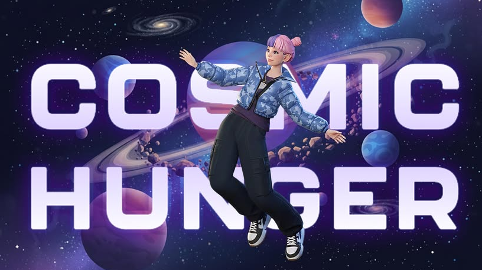
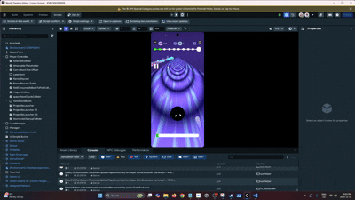

Cosmic Hunger -- Grant from Meta Horizon World Creator Program

An intense mobile endless runner where you play as an asteroid, devouring everything smaller than you to grow massive and survive collision with anything larger.Jump in! .Android/iOSTypescriptHorizon World Desktop EditorJuly - Dec 2025With funding from Meta Horizon World Creator Program. my team and I wanted to create an endless runner game where user can swipe left and right from lane to lane. The user would collect and dodge outer space objects as an asteroid.Create an endless runner game for Meta Horizon world using Meta Desktop Editor. In a team of 3 with an artist and a developer.My job as the developer was to figure out the how much to increase the asteroid size depending on what objects was collecteed, object pooling to decide what types of lanes to spawn, what types of outer space objects to spawn, how to use the super power "wormhole", and create powerups such as lasers, jump boost and magnetic fields. Biggest issue was figuring out when to retrieve and put the objects back to the object pool. For example, if the user is in the wormhole to bypass all the outer space objects, those objects should be put back in the object pool. Below is one example of how I put the outer space objects back into the pool even when user is the wormhole.

At the end I was able to spawn different lanes, out space objects and implement power ups such as the magntic field where it can attract close by objects towards the player in a certain time